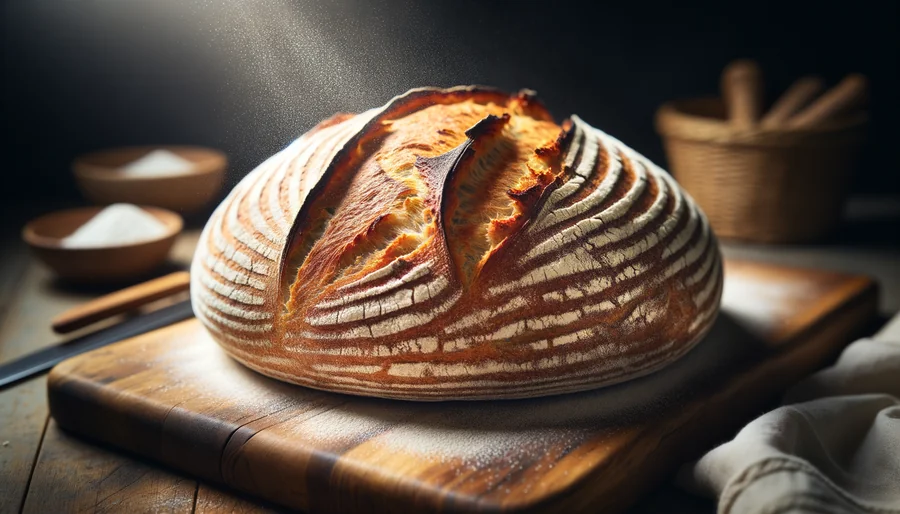

Depuis 1987, la famille Dumont perpétue l'art du pain artisanal dans ce même fournil de Montmartre — avec les mêmes valeurs, la même exigence, et la même flamme.
Notre histoire
Chaque étape de notre histoire a façonné la boulangerie que nous sommes aujourd'hui.
Pierre Dumont, compagnon boulanger, ouvre sa première boutique au 12 rue Lepic. Deux farines, un levain, et une vision : le pain honnête.
Installation d'un four à sole en pierre. Pierre renonce au four électrique : "Le bois donne une croûte irremplaçable."
Claire, fille de Pierre, rejoint l'atelier. Elle apporte la pâtisserie et les viennoiseries au programme, élargissant la gamme avec des recettes de saison.
Conversion totale aux farines biologiques. Partenariat exclusif avec le moulin Bertrand (Beauce), cultivant des variétés anciennes de blé.
Thomas, petit-fils de Pierre, remporte le concours de la meilleure baguette tradition de Paris. La fierté d'une famille, la récompense d'une vie.
Notre équipe
Une équipe passionnée qui travaille dès 3h du matin pour que votre pain soit frais à l'ouverture.
Formé à la Maison Kayser et chez Poilâne, Thomas revient reprendre le fournil familial en 2020. Meilleure baguette de Paris 2022. Sa passion : les fermentations longues et les farines de terroir.
Ancienne de chez Ladurée, Marie crée nos pâtisseries de saison chaque semaine. Avec elle, les tartes, éclairs et entremets renouvellent l'ardoise selon les arrivages du marché.
Spécialiste du feuilletage, Julien est l'artisan de nos croissants et pains au chocolat depuis 8 ans. Il maîtrise le tourage à la main — 27 couches, chaque nuit.

Notre philosophie
Farines Label Rouge issues de blés anciens, beurre AOP Charentes-Poitou, œufs de poules élevées en plein air — nous sélectionnons chaque ingrédient avec soin.
Nos pains fermentent 18 à 24 heures au réfrigérateur. Cette lenteur développe les arômes, améliore la digestibilité, et donne cette mie alvéolée caractéristique.
Notre four en pierre chauffé au bois depuis 1995 distribue une chaleur homogène et confère à nos croûtes cette teinte dorée et ce craquant incomparable.
Chaque baguette, chaque miche, chaque pain spécial est façonné à la main. Aucune machine ne remplacera la sensibilité des mains d'un boulanger expérimenté.